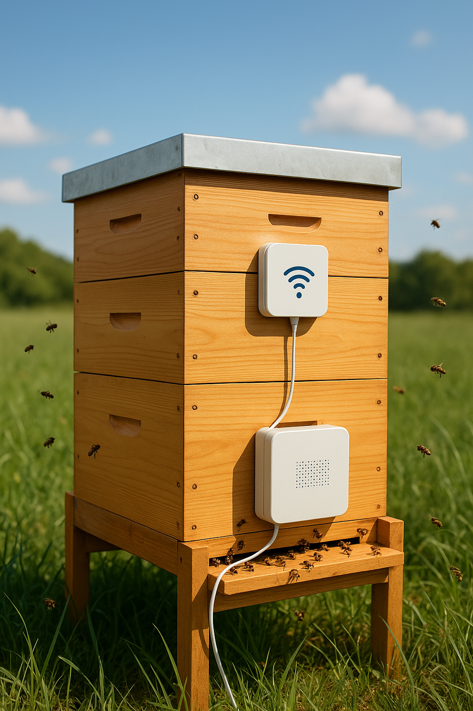

🐝 Ruche Connectée🐝 Connected Beehive
Système IoT complet avec Arduino, capteurs et application Android pour surveiller les ruches en temps réel.Complete IoT system with Arduino, sensors and Android app to monitor beehives in real-time.
ContexteContext
Projet de fin d'année au lycée répondant à une problématique réelle d'un apiculteur local : réduire les déplacements et améliorer l'efficacité de la surveillance de ses ruches via une ruche connectée adaptée au terrain.
Final year high-school project addressing a real issue for a local beekeeper: reducing travel and improving efficiency in hive monitoring with a field-ready connected beehive.
TechnologiesTechnologies
Dispositif embarqué sur carte Arduino couplée à plusieurs capteurs :
Embedded system on an Arduino board with several sensors:
- Température et humidité (intérieur / extérieur)
- Temperature and humidity (indoor / outdoor)
- Capteur de poids pour suivre la production de miel
- Weight sensor to track honey production
- Module GPS pour géolocalisation et anti-vol
- GPS module for geolocation and theft prevention
Données transmises en temps réel via LTE vers une app Android maison, avec le protocole MQTT et le broker Mosquitto.
Real-time data sent over LTE to a custom Android app, using MQTT and the Mosquitto broker.